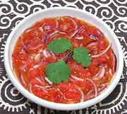

|
Salsa SenegalSenegal | ||||
| Makes: Effort: Sched: DoAhead: |
2 cups ** 20 min Yes |
Salsas of this sort are served with various street foods in Senegal and other West African countries. It is refreshing and has enough chili heat to be distinct, but not at all overwhelming. | |||
|
12 4 1 1/3 1/4 |
oz oz c c |
Tomatoes Onion, red Habanero Lemon Juice Olive Oil (1) |
Make - (20 min)
|